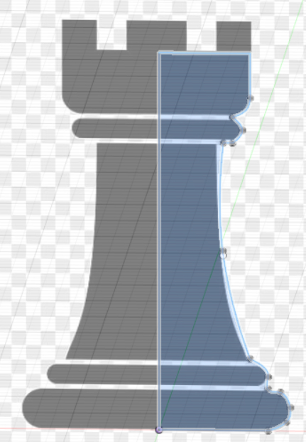
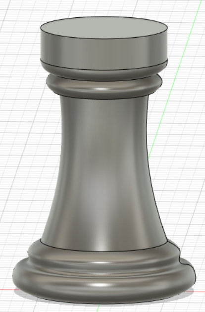

Computer Aided Design
In this topic, we covered 2D raster, 2D vector and 3D cad. The software we used includes Gimp for 2D raster, Inkscape for 2D vector and Fusion 360 for 3D cad.
2D cad
For 2D cad, we used two programs, GIMP and Inkscape for the creation of 2D raster and 2D vector diagrams respectively.
2D Vector
Vector images are mathematical in nature and the images drawn are made up of lines and points. This means that the image will retain sharpness in spite of resolution or screen size. However, vector images are only available in the SVG (Scalable Vector Graphics) format.
2D Raster
Raster images are made up of pixels or single points of colour. This means that if the image made is enlarged or viewed on higher resolution screens, the image will look blurry. However, raster images are available in multiple file formats such as PNG (Portable Network Graphics), GIF (Graphics Interchange Format) and JPG (Joint Photographic Experts Group).
3D cad
For this module, the software we used was Fusion 360. The first step to start creating a 3D model is the sketch.In this example of an egg cup, we started with multiple circles done by offsetting multiple planes.

The next step was to extrude the egg cup. For this example, the loft function was used.The loft fuction allows you to create a transitional shape between two or more planes.


Finally, to make the hole in the centre, the shell function is used. The shell fuction allows you to remove material from a part interior, creating a cavity.
Another useful function is the canvas function, this function allows you to put a picture behind your sketch allowing you sketch using the drawing on the canvas as reference.For this example, we will be using a chesspiece as an example.
Next, we use the revolve fuction to make it 3D.
